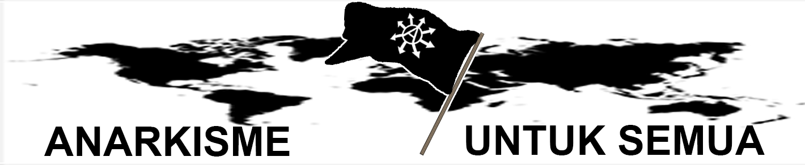

Anarki Ialah Keteraturan
-
Kembali ke laman utama
Ditulis Oleh: Seseorang


Mereka sering mendiskreditkan anarkis sebagai "perusuh", "anti peradaban",
"perusak", "tidak teratur",
dan lain hinaan semacamnya, tidakkah
mereka menyadari bahwa kedamaian yang
mereka rasakan sekarang ada campur tangan
para anarkis?
Komune memimpin sendiri di paris
Melawan Tsar di desa kecil hulyaipole
Revolusi sosial di Spanyol
Melawan rezim Soeharto di '98
Melawan rezim Bashar hingga sekarang
Semuanya tak luput dari anarkisme, mereka mungkin
membungkam anarkis,
mendiskreditkan anarkis--
tetapi mereka tak bisa membungkam
hasil daripada perjuangan anarkis
maupun
menghapuskan anarkis dari muka bumi.
Anarki ialah busuk pada kemewahan,
Anarki ialah harapan pada penderitaan,
Anarki ialah kesetaraan,
Anarki ialah keteraturan.